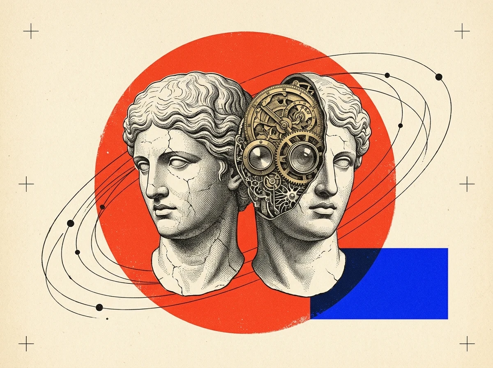

Google cut memory costs 90%. What does that unlock for you?
Uploading the same 300-page PDF, contract, or codebase used to bill you full price on every follow-up question.
How it applies to you: Gemini 2.5 Pro Context Caching now stores your workspace once and drops repeat token reads from $2.50 to $0.25 / 1M—cutting typical multi-turn research and document assistant bills by 78%.
EXPLORE THE α CASTOR EDITORIAL SECTIONS
3 CURATED CHANNELS

TWO MINDS.
ONE ENGINE.
ONE ENGINE.
Less hype. Test your savings in 10 seconds.
1. Uncached Bill:
$142 / month
2. Cached (80% Hit):
$31 / month (-78%)
3. SDK Enablement:
client.caches.create()
LAUNCH THE β POLLUX HANDS-ON TOOLS
3 ACTION TRACKS